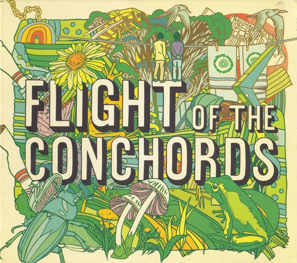

CD
Flight Of The Conchords
Flight Of The Conchords
Media: — · Sleeve: —
—
Personal
Discogs SuggestedCA$21.27
Discogs MedianCA$21.27
Discogs HighCA$21.27
- Physical Copy ID
- BB-CD-1253
- Year
- 2008
- Label
- Sub Pop
- Catalog #
- SPCD 715
- Country
- CACanada
- Genre / Style
- Electronic, Hip Hop, Rock, Reggae, Funk / Soul, Pop, Folk, World, & Country · Folk Rock, Synth-pop, Pop Rock, Dancehall, Parody